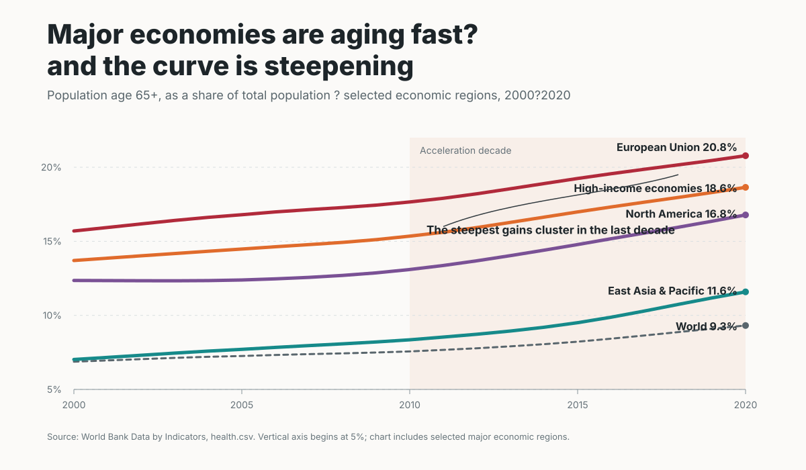
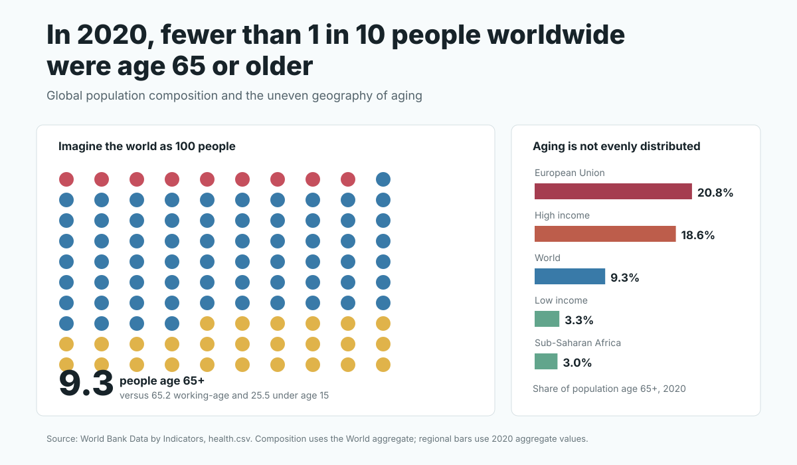

Semantic zoom + dynamic annotation
DSC 106 Project 2 | Persuasive visualization upgraded into an exploratory dashboard
Is the world rapidly becoming an aging society?
Proposition: The world is rapidly becoming an aging society.
The original project compared two persuasive framings of the same World Bank population-aging data. This version keeps that rhetorical audit, then adds a linked dashboard for testing how region selection, time windows, and metric choices change the argument.
How to explore
Start with a claim, then stress-test it.
Brush the timeline to change the year window, brush or click the scatterplot to select regions, switch metrics, and use the table or chips to link highlights across every view.
Coordinated exploration
Population aging, filtered by your choices.
Loading data.
Brush and link
Starting point vs increase
Part to whole
2020 age composition
Ranking
Current metric comparison
Linked records
Regional audit table
| Region | 2020 65+ | Change | Index | Outlier |
|---|
Original persuasive artifacts
Two truthful charts, two very different impressions.
Perspective A: supports the proposition

Selected prominent regions and a truncated y-axis make the rate of change feel urgent. Download visualization A

Perspective B: challenges the proposition

A part-to-whole snapshot makes the global population still look overwhelmingly young and working-age. Download visualization B

Design reflection
The most important lesson from this project is that honest data can still be rhetorically powerful. Selecting 2000-2020, choosing major economies, truncating an axis, or switching from change over time to population composition can change the emotional meaning of the same underlying values.
I define acceptable persuasion as framing that advances an interpretation while preserving access to material counterevidence, denominators, transformations, and limitations. This upgraded dashboard makes those alternatives interactive instead of hiding them in a footnote.
Methodology, data, and reproducibility
Dataset source
World Bank population age indicators, prepared for DSC 106. The project uses age 65+ share from 2000-2020 and 2020 population composition for selected regional aggregates.
Download selected time-series data | Download 2020 context data
Derived fields
Change is 2020 age 65+ share minus 2000 age 65+ share. Indexed growth sets each region's 2000 value to 100. Young share is calculated as 100 minus working-age and older-adult shares in the context data.
Interaction model
A centralized state object tracks filters, selected regions, brush extents, active metric, sort order, highlighted region, zoom level, and active insight. URL parameters encode the shareable state.
Limitations
The dashboard uses regional aggregates rather than countries or individuals. Low-income and Sub-Saharan Africa appear in the 2020 context data but not the time-series CSV, so growth metrics are unavailable for those records.